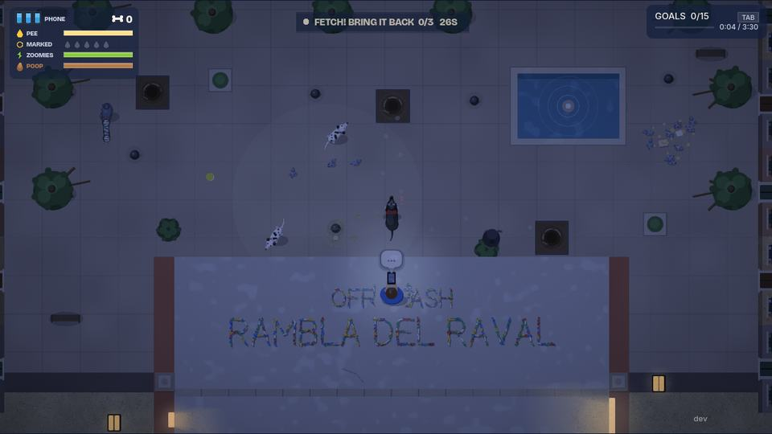

Rambla del Raval
Where the big bronze cat sits
Streetlights and tall palms down the broad Rambla del Raval, where a giant plump bronze cat ordinarily naps peacefully on its plinth. Here El Gat springs down to prowl the promenade, scattering pigeons and leaping from awnings until a hard leash fling brings him back to earth.
- Off-leash stop
- RAMBLA DEL RAVAL (Open plaça)
- Beat the clock
- Under 3:30
- Boss
- El Gat
Screenshots



Goals (15)
- Mark 5 spots
- Have 4 good long sniffs
- Get the phone home without a scratch
- Get yourself home without a bump
- Get your business bagged
- Catch pouncing El Gat in a taut leash
- Scatter 10 pigeons
- Dodge 3 paw swats
- Make El Gat land on a palm or a table
- Fling your human into El Gat
- Land an x3 trick combo
- Snatch the yarn from the overturned kiosk
- Spell LEASH
- Find the hidden pernil
- Beat the clock (under 3:30)